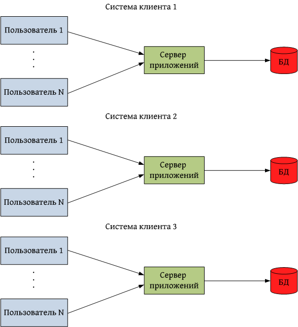
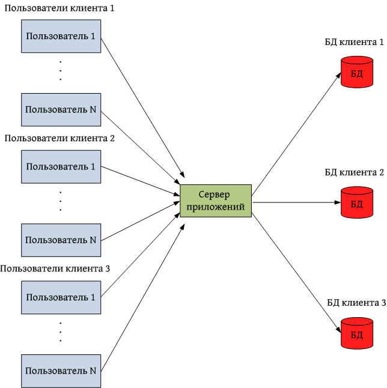
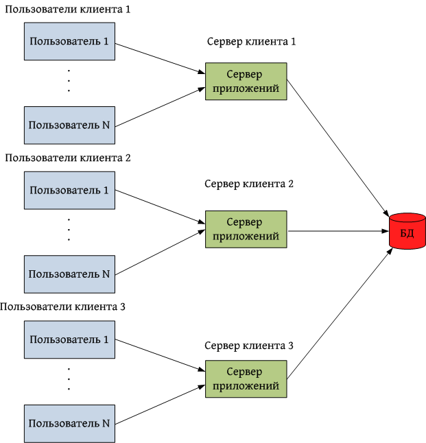
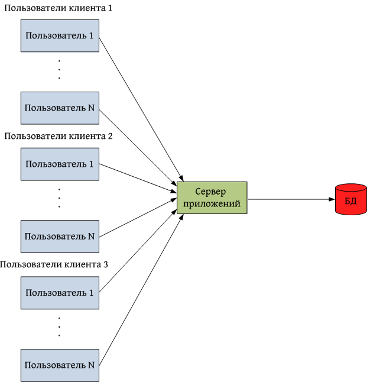

Переезжаем в коммуналку:
селим нескольких клиентов в один кластер

Чем мы занимаемся?
Программный комплекс

Обеспечивает комплексную автоматизацию деятельности турагентств и туроператоров.Ключевые особенности системы:
- Многозвенное распределенное приложение на платформе Java EE + PostgreSQL
- Обеспечивает работу в режиме высокой нагрузки
- Имеет высокую степень масштабируемости
Приложение для колл-центра

Пример B2C веб-сайта

Что же такое мультиарендность?
 Определение мультиарендности
Определение мультиарендности
Мультиарендность («multitenancy» — «множественная аренда») — элемент архитектуры программного обеспечения, где единый экземпляр приложения, запущенного на сервере, обслуживает множество организаций-клиентов («арендаторов»)
Зачем нам понадобилась мультиарендность?
 Постановка задачи
Постановка задачи
- Необходимо дать небольшим турагентствам доступ к системе крупного клиента в составе консорциума
- Необходимо обеспечить им возможность иметь общие данные
- Для небольших турагентств дорого содержать выделенную систему
 Преимущества мультиарендности
Преимущества мультиарендности
- Мнимизация инфраструктурных расходов
- Более рациональное использование аппаратных ресурсов
- Минимизация дублирования общих данных
- Хорошая масштабируемость в пределах одного кластера
- Архитектура с наличием общих данных хорошо моделирует работу консорциума небольших турагентств во главе с большим туроператором
 Недостатки мультиарендности
Недостатки мультиарендности
- Невозможность полностью исключить взаимное влияние клиентов друг на друга
- Невозможность обновления ПО одного клиента без обновления остальных
- Сложность обеспечения полной изоляцию данных клиентов
- Сложность переноса клиента на выделенную систему
- Сложность оценки нагрузки, производимой каждым конкретным клиентом
 Мультиарендная архитектура
Мультиарендная архитектура
Варианты реализации мультиарендной архитектуры:
- Выделенные сервера приложений и БД (отсутствие мультиарендности)
- Общий сервер приложений, выделенные БД
- Выделенный сервер приложений, общая БД
- Общий сервер приложений, общая БД
Выделенные сервера приложений и БД

Общий сервер приложений, выделенные БД

Выделенные сервера приложений, общая БД

Общий сервер приложений, общая БД

 Общий сервер приложений
Общий сервер приложений
Преимущества:
- Рациональное использование аппаратных ресурсов
- Добавление нового клиента не требует подъема нового сервера
Недостатки:
- Нужно знать, в контексте какого клиента выполняется код
- Высокая степень влияния клиентов друг на друга по производительности
- При использовании выделенных БД не будут работать кэши 2-го и 3-го уровня в Hibernate (до версии 4.0)
 Общая база данных
Общая база данных
Варианты реализации:
- Отдельная схема на каждого клиента
- Отдельный комплект таблиц для каждого клиента
- Общие таблицы для всех клиентов
Общая база данных
Преимущества:
- Можно использовать единый пул соединений с БД
- Удобно выполнять запросы по данным сразу нескольких клиентов
- Можно легко делать ссылки между общими и частными данными
Недостатки:
- Большой размер БД
- Сложность создания бэкапа данных отдельного клиента
- Удаление клиента проблематично
Выбор архитектуры
Оптимальный вариант для решения поставленной задачи в нашем случае - общий сервер приложений и общая БД
- Клиенты относительно небольшие, их взаимным влиянием можно пренебречь
- Гибкие ограничения на видимость данных между клиентами
- Удаления клиентов происходят нечасто
- Уже имеется инфраструктура для хранения идентификатора клиента в контексте выполняемого кода
 Штатная поддержка мультиарендности
Штатная поддержка мультиарендности
- Спецификация Java EE 7 обеспечивает поддержку мультиарендности на уровне всех сервисов, в т.ч. JPA, JMS, EJB, JNDI
- В Hibernate 4.x штатно поддерживается архитектура с выделенными БД и выделенными схемами внутри одной БД, поддержка общей БД с дискриминатором запланирована в Hibernate 5.0
- В Hibernate 3.x штатной поддержки нет, однако есть механизм фильтров
Модель видимости сущностей
- Сущность видна всем клиентам, но редактируется только главным клиентом
- Сущность может видеть и редактировать только клиент ее создавший
- Сущность видна и редактируется своим клиентом, но если она принадлежит главному клиенту, то также видна, но не недактируема другими клиентами
- Сущность не видна никому, кроме главного клиента
Реализация дискриминатора
- Общий пул соединений с БД
- Фильтр для SELECT запросов
- Интерцептор для вставок
- Хранение идентификатора клиента в контексте выполняемого кода
- Индексы по всем дискриминаторам
- Дискриминатор должен быть включен во все ограничения на уникальность значений полей в БД
 Сложности реализации
Сложности реализации
- Классифицикация модели данных из более, чем 400 сущностей
- Особого внимания потребовала подсистема отчетов
- Администраторы системы должны иметь доступ к данным всех клиентов
- Используемая версия Hibernate некорректно работала с фильтрами в подзапросах
- Анализ большого объема кода на предмет наличия идентификатора клиента в текущем контексте
- Весь функционал системы должны быть протестирован
 Результаты
Результаты
- Разработка заняла относительно небольшое время (2.5 месяца)
- Общее быстродействие системы не пострадало
- Примененное решение достаточно элегантно точки зрения качества кода
- Технология была успешно внедрена в production
 Выводы
Выводы
- Внедрение технологии позволяет перейти к модели продаж ПО SaaS
- Затраты на модернизацию системы полностью окупаются за счет снижения инфраструктурных расходов
- Мультиарендность позволяет снизить порог доступности системы для небольших клиентов
- Важно уделить особое внимание изоляции клиентов друг от друга
Спасибо за внимание!